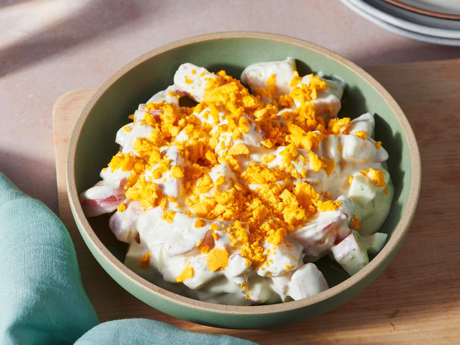

Potato Salad Recipe
Home

Description
Yummy simple potato salad recipe, that will knock your socks off!
Ingredients:
- 3 red potatoes
- 2 eggs
- 1 ½ cups creamy salad dressing
Steps:
- Gather the ingredients.
- Bring a small pot of salted water to a boil. Add potatoes; cook
until tender but still firm, about 15 minutes. Drain and cool.
- Place eggs in a saucepan, and cover completely with cold water.
Bring water to a boil. Cover, remove from heat, and let eggs stand
in hot water for 10 to 12 minutes. Remove from hot water,
and cool.
- Peel the eggs and cut around the egg white; keep the yolk whole.
- Dice egg whites and potatoes. Combine in a mixing bowl and add
salad dressing
- Toss potatoes and egg; crumble egg yolk on top and serve chilled.
Nutrition Facts (per serving)
- 557 calories
- 36g fat
- 50g carbs
- 8g Protein
Home